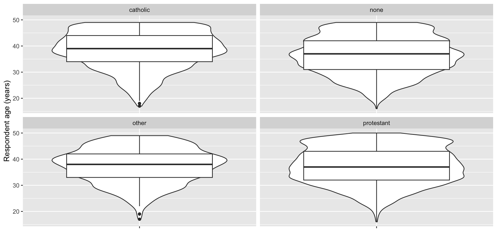

This software is distributed under the terms of the GNU General
Public License, either Version 2, June 1991 or Version 3, June 2007.
The terms of version 2 of the license are in a file called COPYING
which you should have received with
this software and which can be displayed by RShowDoc("COPYING").
Version 3 of the license can be displayed by RShowDoc("GPL-3").
Copies of both versions 2 and 3 of the license can be found
at https://www.R-project.org/Licenses/.
A small number of files (the API header files listed in
R_DOC_DIR/COPYRIGHTS) are distributed under the
LESSER GNU GENERAL PUBLIC LICENSE, version 2.1 or later.
This can be displayed by RShowDoc("LGPL-2.1"),
or obtained at the URI given.
Version 3 of the license can be displayed by RShowDoc("LGPL-3").
'Share and Enjoy.'Introduction to Python
2025-04-03
Rick Gilmore
Prelude
EllaFitzgeraldVEVO (2024)
Overview
In the news

Figure from Witze (2025)
Kozlov (2025)
Mandavilli & Rabin (2025)
Nunn (2025)
Nunn (2025)
“Leading Causes of Death” (2024)
Multiple Cause of Death, 2018-2023, 20-24 years
| Cause | Deaths | Crude Rate |
|---|---|---|
| Accidents (unintentional injuries) | 56981 | 43.4 |
| Intentional self-harm (suicide) | 23238 | 17.7 |
| Assault (homicide) | 20098 | 131142222 |
| Cause | Deaths | Crude Rate |
|---|---|---|
| Malignant neoplasms | 4627 | 3.5 |
| Diseases of heart | 3520 | 2.7 |
| COVID-19 | 1779 | 1.4 |
| Diabetes mellitus | 1259 | 1.0 |
| Cause | Deaths | Crude Rate |
|---|---|---|
| Congenital malformations, deformations and chromosomal abnormalities | 1217 | 0.9 |
| Pregnancy, childbirth and the puerperium | 826 | 0.6 |
| Chronic lower respiratory diseases | 699 | 0.5 |
| Influenza and pneumonia | 634 | 0.5 |
| Cause | Deaths | Crude Rate |
|---|---|---|
| Cerebrovascular diseases | 619 | 0.5 |
| Legal intervention | 451 | 0.3 |
| Septicemia | 432 | 0.3 |
| Nephritis, nephrotic syndrome and nephrosis | 289 | 0.2 |
Announcements
- Exercise 06 due today.
- Final project presentation survey due Tuesday, April 8.
Tentative presentation schedule
Last time…
NSFG repondent age by religion figure
Recommended design principles
- Work iteratively (in small steps)
- Keep prior versions
- Store figure code in
*.Ror*.qmdfiles
- Store figure code in
- No ‘secret sauce’
- The process is the product
Today
- Introduction to Python
- Work session
- DataCamp
- Exercise 06
- Final projects
Introduction to Python
Why learn Python?
- It’s fun
- It’s free
- Amaze your friends; dazzle your rivals
- Powerful tool
- It will make you a more productive researcher
- Practical job-related skill
- More popular than R!
Why should psychologists learn Python?
- Make experiments using Psychopy
- Gather, clean, visualize your data using matplotlib, Seaborn, etc.
- Reproducible == robust, easy to share with others
Console
R
Reminder
Painful lesson #1
Computers are super-literal. They are anally literal. More anally literal than any human being you’ve ever had to deal with.
You’re not going to change them. Being this anal is their superpower.
Just deal.
Simple math
Getting help
Python
Help on _ArrayFunctionDispatcher in numpy:
numpy.sort = sort(a, axis=-1, kind=None, order=None, *, stable=None)
Return a sorted copy of an array.
Parameters
----------
a : array_like
Array to be sorted.
axis : int or None, optional
Axis along which to sort. If None, the array is flattened before
sorting. The default is -1, which sorts along the last axis.
kind : {'quicksort', 'mergesort', 'heapsort', 'stable'}, optional
Sorting algorithm. The default is 'quicksort'. Note that both 'stable'
and 'mergesort' use timsort or radix sort under the covers and,
in general, the actual implementation will vary with data type.
The 'mergesort' option is retained for backwards compatibility.
order : str or list of str, optional
When `a` is an array with fields defined, this argument specifies
which fields to compare first, second, etc. A single field can
be specified as a string, and not all fields need be specified,
but unspecified fields will still be used, in the order in which
they come up in the dtype, to break ties.
stable : bool, optional
Sort stability. If ``True``, the returned array will maintain
the relative order of ``a`` values which compare as equal.
If ``False`` or ``None``, this is not guaranteed. Internally,
this option selects ``kind='stable'``. Default: ``None``.
.. versionadded:: 2.0.0
Returns
-------
sorted_array : ndarray
Array of the same type and shape as `a`.
See Also
--------
ndarray.sort : Method to sort an array in-place.
argsort : Indirect sort.
lexsort : Indirect stable sort on multiple keys.
searchsorted : Find elements in a sorted array.
partition : Partial sort.
Notes
-----
The various sorting algorithms are characterized by their average speed,
worst case performance, work space size, and whether they are stable. A
stable sort keeps items with the same key in the same relative
order. The four algorithms implemented in NumPy have the following
properties:
=========== ======= ============= ============ ========
kind speed worst case work space stable
=========== ======= ============= ============ ========
'quicksort' 1 O(n^2) 0 no
'heapsort' 3 O(n*log(n)) 0 no
'mergesort' 2 O(n*log(n)) ~n/2 yes
'timsort' 2 O(n*log(n)) ~n/2 yes
=========== ======= ============= ============ ========
.. note:: The datatype determines which of 'mergesort' or 'timsort'
is actually used, even if 'mergesort' is specified. User selection
at a finer scale is not currently available.
For performance, ``sort`` makes a temporary copy if needed to make the data
`contiguous <https://numpy.org/doc/stable/glossary.html#term-contiguous>`_
in memory along the sort axis. For even better performance and reduced
memory consumption, ensure that the array is already contiguous along the
sort axis.
The sort order for complex numbers is lexicographic. If both the real
and imaginary parts are non-nan then the order is determined by the
real parts except when they are equal, in which case the order is
determined by the imaginary parts.
Previous to numpy 1.4.0 sorting real and complex arrays containing nan
values led to undefined behaviour. In numpy versions >= 1.4.0 nan
values are sorted to the end. The extended sort order is:
* Real: [R, nan]
* Complex: [R + Rj, R + nanj, nan + Rj, nan + nanj]
where R is a non-nan real value. Complex values with the same nan
placements are sorted according to the non-nan part if it exists.
Non-nan values are sorted as before.
quicksort has been changed to:
`introsort <https://en.wikipedia.org/wiki/Introsort>`_.
When sorting does not make enough progress it switches to
`heapsort <https://en.wikipedia.org/wiki/Heapsort>`_.
This implementation makes quicksort O(n*log(n)) in the worst case.
'stable' automatically chooses the best stable sorting algorithm
for the data type being sorted.
It, along with 'mergesort' is currently mapped to
`timsort <https://en.wikipedia.org/wiki/Timsort>`_
or `radix sort <https://en.wikipedia.org/wiki/Radix_sort>`_
depending on the data type.
API forward compatibility currently limits the
ability to select the implementation and it is hardwired for the different
data types.
Timsort is added for better performance on already or nearly
sorted data. On random data timsort is almost identical to
mergesort. It is now used for stable sort while quicksort is still the
default sort if none is chosen. For timsort details, refer to
`CPython listsort.txt
<https://github.com/python/cpython/blob/3.7/Objects/listsort.txt>`_
'mergesort' and 'stable' are mapped to radix sort for integer data types.
Radix sort is an O(n) sort instead of O(n log n).
NaT now sorts to the end of arrays for consistency with NaN.
Examples
--------
>>> import numpy as np
>>> a = np.array([[1,4],[3,1]])
>>> np.sort(a) # sort along the last axis
array([[1, 4],
[1, 3]])
>>> np.sort(a, axis=None) # sort the flattened array
array([1, 1, 3, 4])
>>> np.sort(a, axis=0) # sort along the first axis
array([[1, 1],
[3, 4]])
Use the `order` keyword to specify a field to use when sorting a
structured array:
>>> dtype = [('name', 'S10'), ('height', float), ('age', int)]
>>> values = [('Arthur', 1.8, 41), ('Lancelot', 1.9, 38),
... ('Galahad', 1.7, 38)]
>>> a = np.array(values, dtype=dtype) # create a structured array
>>> np.sort(a, order='height') # doctest: +SKIP
array([('Galahad', 1.7, 38), ('Arthur', 1.8, 41),
('Lancelot', 1.8999999999999999, 38)],
dtype=[('name', '|S10'), ('height', '<f8'), ('age', '<i4')])
Sort by age, then height if ages are equal:
>>> np.sort(a, order=['age', 'height']) # doctest: +SKIP
array([('Galahad', 1.7, 38), ('Lancelot', 1.8999999999999999, 38),
('Arthur', 1.8, 41)],
dtype=[('name', '|S10'), ('height', '<f8'), ('age', '<i4')])Importing packages/libraries
sort() again
R
Don’t use =, use <-
- You can substitute
=but don’t. Use<-. - It’s stylistic, but style matters.
- It’s like saying ‘like’ all the time. Like people will like understand you, but they’ll wonder why you like say like all the time when you really need not.
- It’s also a topic that could get you in a ‘flame war’.
- Avoid flame wars if you can. Life is too short.
Python
Use =, not <-
- It’s essential.
Asking questions
- comparison operators (
==,!=,>,<, etc.).
Python
1 == 0
1np.sqrt(9) < 4- 1
-
Have to use
numpyto get the square root (sqrt) function.
Falsenp.True_What can we talk about?
Strings
Strings \(\neq\) numbers!
Note
R uses FALSE where Python uses False.
Data frames
R
'data.frame': 2 obs. of 2 variables:
$ name: chr "Tom" "Jerry"
$ age : num 10 19Python
1import pandas as pd
data = {'name': ["Tom", "Jerry"],
'age': [10, 19]}
df = pd.DataFrame(data)
print(df)- 1
-
Load the
pandaspackage to handle data frames.
name age
0 Tom 10
1 Jerry 19Plots in R
Plots in Python
1import matplotlib.pyplot as plt
rand_x = np.random.normal(0, 1, 100)
rand_y = np.random.normal(0, 1, 100)
data = {'x': rand_x, 'y': rand_y}
df = pd.DataFrame(data)- 1
-
Import
pyplotmodule frommatplotlibwith short nameplt.

Tip to the wise
- Load/import packages/libraries once
- At the top of your script/document
- Need a new one? Add it to the code at the top of your script/document.
Rules for naming things
- Replace spaces (and hyphens/minus characters
-) with underscores (_), and - Start names with letters, not numbers.
- acceptable names for things:
bigly,good_name,a_longer_good_name,Good_name1, and eventhisIsCamelCaseNoUnderscores - unacceptable names:
!good,bad name(has a space) or1_very_bad_name(starts with a number).
Work session
Next time
Exploring data with Python
Resources
References
EllaFitzgeraldVEVO. (2024). Ella fitzgerald, louis armstrong - let’s call the whole thing off (audio). Youtube. Retrieved from https://www.youtube.com/watch?v=qfu_PD-7EtM
Kozlov, M. (2025). ’One of the darkest days’: NIH purges agency leadership amid mass layoffs. Nature. https://doi.org/10.1038/d41586-025-01016-z
Leading Causes of Death. (2024, October 26). Retrieved April 3, 2025, from https://www.cdc.gov/nchs/fastats/leading-causes-of-death.htm
Mandavilli, A., & Rabin, R. C. (2025, April 2). C.D.C. Cuts threaten to set back the nation’s health, critics say. The New York Times. The New York Times. Retrieved from https://www.nytimes.com/2025/04/02/health/cdc-layoffs-kennedy.html
Nunn, E. B. (2025, April 2). Inside the C.D.C., a final “love letter” before mass layoffs. The New York Times. The New York Times. Retrieved from https://www.nytimes.com/2025/04/02/health/cdc-layoffs-response.html
Witze, A. (2025). 75% of US scientists who answered nature poll consider leaving. Nature. https://doi.org/10.1038/d41586-025-00938-y